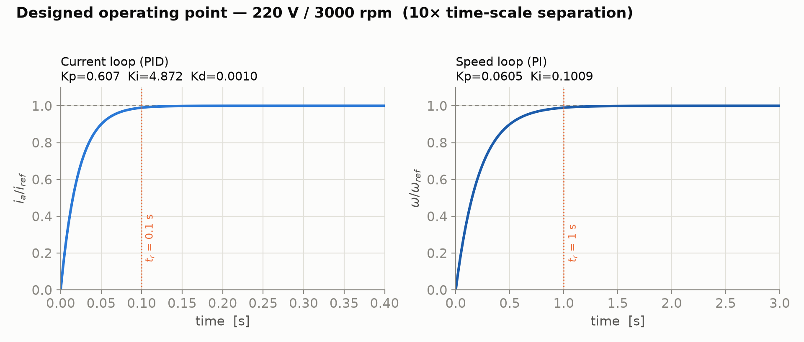

Pourquoi deux boucles ?Why two loops?
Quand la charge change, la vitesse dépend du couple, donc du courant d’induit. La commande en cascade donne une réponse rapide au courant avant de demander à la vitesse de se corriger.When load changes, speed depends on torque and therefore armature current. Cascade control lets current respond quickly before the speed loop corrects the overall behaviour.
L’étude porte sur une machine à excitation séparée alimentée en tension par un pont redresseur triphasé à six pulses. La boucle de vitesse externe calcule une consigne de courant ; la boucle interne agit sur l’angle d’amorçage des thyristors pour imposer ce courant.The study uses a separately excited machine supplied through a six-pulse three-phase rectifier. The outer speed loop computes a current reference; the inner loop acts on thyristor firing angle to impose that current.
Le projet distingue le comportement électrique rapide de la dynamique mécanique plus lente. Ce découpage rend le réglage des correcteurs explicable à partir des constantes de temps de la machine.The project separates fast electrical behaviour from slower mechanical dynamics. That separation makes controller tuning explainable from machine time constants.
- ActionneurActuator
Pont triphasé commandé à thyristors.Three-phase controlled thyristor bridge.
- Boucle interneInner loop
Courant et couple, réponse rapide.Current and torque, fast response.
- Boucle externeOuter loop
Vitesse et rejet des perturbations de charge.Speed and load-disturbance rejection.
Du modèle au correcteurFrom plant model to controller
Le rapport établit le modèle du redresseur et de la machine, puis règle les correcteurs PI/PID analytiquement par compensation pôle–zéro.The report derives rectifier and motor models, then tunes PI/PID controllers analytically using pole-zero compensation.
Les scripts MATLAB définissent les paramètres de la machine, le point de fonctionnement et les gains. Un modèle Simulink par fonctions de transfert aide à comprendre la cascade ; un modèle SimPowerSystems inclut le pont commandé et la machine détaillée.MATLAB scripts define machine data, the operating point and gains. A transfer-function Simulink model clarifies the cascade; a SimPowerSystems model includes the controlled bridge and detailed machine.
Un portage NumPy/SciPy reproduit le réglage et génère des courbes de réponse. Il permet de vérifier les calculs de conception sans dépendre exclusivement du modèle Simulink ; le guide Python documente la concordance des quantités de réglage.A NumPy/SciPy port reproduces the tuning and generates response curves. It checks design calculations independently of the Simulink model; the Python guide documents agreement of the tuning quantities.
- ModéliserModel
Constantes électriques et mécaniques, redresseur, fonction de transfert.Electrical and mechanical constants, rectifier and transfer function.
- RéglerTune
PI/PID à partir des temps de réponse visés.PI/PID from targeted response times.
- RecouperCross-check
Même réglage reproduit en Python.Same tuning reproduced in Python.

Explorer la forme de la réponseExplore the shape of the response
Les figures ne se limitent pas à une courbe nominale : elles isolent l’effet du temps de montée de la boucle de courant, puis de l’amortissement et de la fréquence naturelle de la boucle de vitesse.The figures go beyond one nominal curve: they isolate the effect of current-loop rise time, then speed-loop damping and natural frequency.
Le guide du portage Python indique un point de fonctionnement conçu à 220 V et 3 000 tr/min et liste les gains obtenus dans les deux environnements. Les balayages de paramètres montrent comment les objectifs de temps de réponse modifient dépassement et établissement.The Python-port guide records a designed 220 V, 3,000 rpm operating point and matching gains in both environments. Parameter sweeps show how response targets affect overshoot and settling.
Ce sont des résultats de simulation et de calcul de réglage. Aucune mesure sur banc moteur n’est revendiquée ; le rapport rassemble l’architecture, les modèles et les réponses.These are simulation and tuning-calculation results. No motor-bench measurements are claimed; the report brings together architecture, models and responses.
La leçon de commandeThe control lesson
La cascade permet de concevoir chaque dynamique à sa bonne échelle : courant d’abord, vitesse ensuite. Le recoupement Python rend les calculs de gains plus faciles à auditer.Cascade design gives each dynamic its proper time scale: current first, speed second. Python cross-checking makes gain calculations easier to audit.
L’étude reste distincte de la commande vectorielle FOC du moteur asynchrone : machine, convertisseur et stratégie de commande sont différents.This study is separate from the induction-motor FOC project: machine, converter and control strategy all differ.